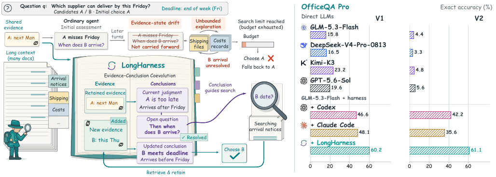
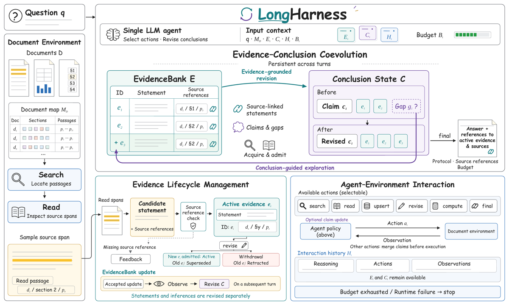
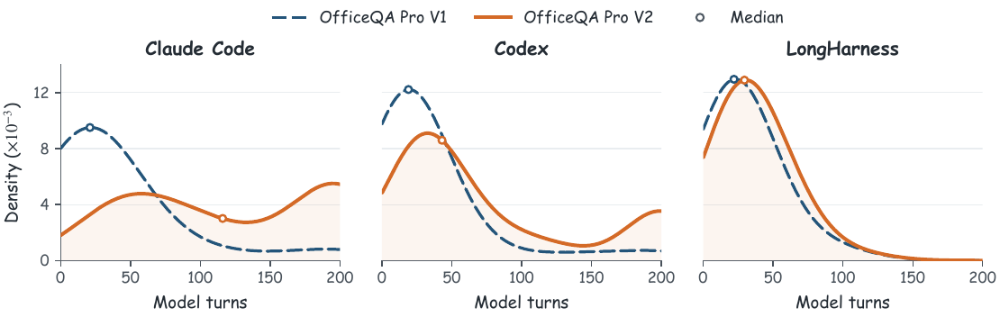
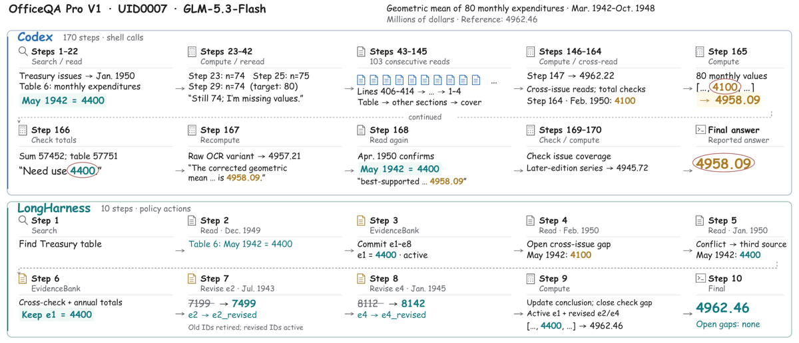

TL;DR : harness d'inférence (zéro entraînement) qui remplace les « notes libres » d'un agent de lecture de corpus par deux états persistants typés — un EvidenceBank d'énoncés atomiques liés à des spans sources enregistrés, et un Conclusion State (established / hypotheses / open gaps) — et fait tourner une boucle où les gaps non résolus pilotent la recherche et où chaque admission de preuve déclenche une révision des conclusions.
Claim principal, précisément : à backbone fixé (GLM-5.3-Flash), sur OfficeQA Pro (corpus exposé en entier, pas de gold docs), LongHarness atteint 60,2 % exact match en V1 et 61,1 % en V2 contre 15,8 % / 4,4 % en direct reasoning (BM25 → fenêtre 256K), et dépasse le meilleur harness concurrent de 12,0 pts en V1 (Claude Code) et 18,9 pts en V2 (Codex) [abstract, §3.2, Tab. 1]. Claim secondaire, le plus intéressant : la médiane de tours ne passe que de 22 à 30 entre V1 et V2 contre 21→116 pour Claude Code [§3.4, Fig. 3].
⚠️ Claim absent : aucun effet sur l'entraînement n'est mesuré, ni même discuté. Les auteurs se positionnent explicitement comme l'alternative runtime aux méthodes de post-training (« \method{} instead couples evidence and conclusions at runtime […] without additional policy training » [§4.1]).
C'est le cœur du papier, et la partie la plus directement réutilisable.
Observation à chaque tour [App. B.4] — reconstruite à chaque requête, dans cet ordre : (i) instructions système (prompt de l'App. C.3) + bloc tâche (question, format de réponse exigé, document map $M_D$, schémas d'action, budget) ; (ii) l'intégralité de l'historique — tous les raisonnements, actions et observations d'outils précédents, « retenus en entier plutôt que remplacés par des résumés ou des placeholders » ; (iii) un bloc d'état courant : EvidenceBank, Conclusion State (sérialisé sous state avec les listes established, hypotheses, open), budgets restants.
→ Ce qui est jeté, et selon quel critère : rien n'est jeté du contexte. « The client does not automatically truncate or compact the interaction history » [App. B.4]. Il n'y a aucune compaction. L'élagage ne porte que sur la citabilité des preuves : une entrée revise-ée est marquée superseded (ou retracted si remplacement nul), reste dans le revision record et dans l'historique, mais ne peut plus être citée dans compute ni final [App. B.2]. Critère de mise à l'écart = décision de la policy elle-même, pas du contrôleur, pas d'un score. Le contrôleur ne vérifie que l'enregistrement des références sources ; « la policy juge si l'énoncé représente fidèlement ses sources » [App. B.2].
→ Conséquence directe pour un usage RL : la trajectoire reste une chaîne (pas d'arbre induit par compaction), le préfixe reste intact, mais le contexte croît de façon non bornée. Le papier assume ce coût par une terminaison brutale : un échec de requête persistant après retry, y compris le rejet d'une requête trop longue, est enregistré model_request_failed et termine l'épisode, compté comme incorrect [App. B.4]. C'est l'overflow-as-failure, pas la compaction.
Espace d'actions — une seule opération par tour, recopie de l'interface [Tab. 6, App. B.1] :
| Opération | But | Observation retournée |
|---|---|---|
search |
localiser documents/passages pour un besoin d'information | locations candidates classées + snippets de navigation |
read |
inspecter des locations sous une étendue de lecture bornée | texte source + références sources enregistrées |
EvidenceBank (upsert / revise) |
committer ou réviser des énoncés liés à la source | énoncés actifs, statut de révision, feedback de validation |
compute |
évaluer une expression numérique déterministe sur des valeurs de preuve | valeur calculée + integrity warnings |
final |
soumettre la réponse avec ses références | sortie acceptée avec références résolues, ou feedback de validation |
Opérations EvidenceBank [Tab. 7] : upsert (un ou plusieurs énoncés source-linked proposés → chaque énoncé validé devient une entrée active ; validation indépendante par énoncé, donc acceptation partielle d'un batch possible) ; revise (identifiant d'une entrée active + remplacement, ou remplacement nul → remplace ou retire l'entrée). Identifiants immuables, pas d'édition en place. Recherche : requêtes lexicales et expressions régulières, restreignables à des documents ou sections données ; ranking BM25-like [App. C.1]. Signatures de types/arguments exactes : non précisées (le papier décrit les opérations en prose, pas en JSON schema).
Single/multi-turn & horizon : multi-turn, une action par tour. Budgets [Tab. 8] : 200 tours max, 60 appels search max, budget de lecture cumulé 1 000 000 tokens (ne comptant que le texte source renvoyé par read), 16 384 tokens max par read. Horizon typique observé : médiane 22 tours (V1) et 30 tours (V2) [§3.4]. Gestion du contexte long : aucune troncature, aucun résumé, aucune mémoire externe — l'« organisation » est obtenue par l'ajout des deux états structurés en plus de l'historique complet.
Exécution : workspace isolé contenant question, documents, répertoire de sortie ; accès réseau désactivé au niveau des outils ; accès fichiers confiné au workspace, excluant les réponses de référence, les scripts de scoring et les métadonnées de run [App. C.2]. Déterminisme : non — température 1 côté policy ; compute est en revanche explicitement « déterministe ». Reset/timeouts : non précisés (hors budgets et retry du client modèle).
Gestion des erreurs : une action invalide (protocole, référence source non enregistrée, budget) renvoie une observation d'erreur sans modifier les états persistants [App. B.1, Alg. 1 l.7-9] — les états sont préservés sur action invalide. Un identifiant d'EvidenceBank n'est utilisable qu'après observation réussie, et une preuve créée au tour courant n'est citable qu'au tour suivant [prompt, App. C.3]. final n'est accepté que si la structure de réponse est valide et si les références résolvent vers des entrées actives et leur texte source [§2.4]. Épuisement de ressources ou échec runtime → épisode terminé sans réponse acceptée, scoré incorrect [§2.4, App. B.4].
⚠️ Trous du contrat, non corrigés et explicitement assumés [App. B.3] : (i) quand une preuve devient inactive, « les transition logs signalent les références de conclusion affectées, mais le runtime ne supprime ni ne réécrit automatiquement ces claims et ne bloque pas la poursuite de la recherche » ; (ii) « compute et final valident les IDs de preuve déclarés dans leur requête, pas toutes les références retenues dans le Conclusion State » ; (iii) « compute n'établit pas non plus que les opérandes littéraux correspondent aux valeurs sources citées ». Autrement dit : un agent peut citer des IDs valides et passer des nombres arbitraires dans l'expression, et conserver des claims appuyés sur des preuves retirées. Sous un reward, ce sont exactement les trois premières portes à exploiter.
Exemple de trajectoire — case study [§D, Fig. 4], OfficeQA Pro V1 UID0007, moyenne géométrique de 80 dépenses mensuelles (réf. 4962,46 M$) : search (table Treasury) → read Dec. 1949 (Table 6 : May 1942 = 4400) → EvidenceBank (commit e1–e8, e1 = 4400 actif) → read Feb. 1950 (ouvre un gap cross-issue : May 1942 = 4100) → read Jan. 1950 (conflit → troisième source : 4400) → EvidenceBank (cross-check + totaux annuels, garde e1 = 4400) → revise e2 (7199 → 7499, Jul. 1943) → revise e4 (8112 → 8142, Jan. 1945) → compute (mise à jour de la conclusion, fermeture du gap) → final 4962,46, open gaps: none. 10 actions. Codex sur le même item : 170 appels shell, dont 103 lectures rétrogrades consécutives, et réponse finale 4958,09 malgré la correction reconnue.
Il n'y a pas de reward. Le papier n'optimise rien ; il y a (a) des métriques d'évaluation et (b) des validations de contrat faites par le contrôleur du harness. Distinguer les deux est capital pour la transposition.
read antérieur), contraintes de budget, résolution des IDs déclarés dans compute/final vers des entrées actives [§2.4, App. B.1-B.3]. ⚠️ Aucune vérification de fidélité énoncé↔source : elle est déléguée à la policy.Aucun entraînement : ni RL, ni SFT, ni DPO, ni reward model. C'est explicite et revendiqué comme contribution (« model-agnostic harness », « without additional policy training » [§4.1]). Pas d'algorithme, pas de KL, pas d'advantage, pas de step count — sans objet plutôt que « non précisé ».
Hyperparamètres d'inférence, identiques pour tous les backbones [§3.1, App. B.4] : température 1, top-p 0,95, maximum reasoning effort, limite de sortie 32 768 tokens/requête. Budgets harness : 200 tours, 60 search, 1M tokens de lecture cumulée, 16 384 tokens/read [Tab. 8]. Concurrents : Codex CLI 0.135.0 et Claude Code 2.1.216, 200 tours modèle + 200 appels d'outils chacun ; RLM 30 itérations racine, profondeur de récursion 1 (les subcalls reçoivent des complétions simples), même backbone pour racine et subcalls, plus un appel de reformatage si la sortie ne respecte pas le format [§3.1, App. C.2, Tab. 9].
Stabilité / dynamique : pas de courbes de reward, de longueur ou d'entropie (rien à tracer). Le seul proxy dynamique est la distribution des tours par question (Fig. 3) et le taux d'épuisement de budget (Codex : 3,8 % des questions V1, 21,1 % des questions V2) [§3.4].
Compute : non précisé — aucune GPU/TPU-heure, aucun coût API, aucune durée. Les auteurs invoquent des « contraintes de ressources computationnelles » pour justifier un run unique dans la comparaison principale [§3.1].
⚠️ Mon évaluation : ce papier est un design d'environnement, à lire comme tel. Transposé en env RL, la question ouverte qu'il ne touche pas est précisément celle du régime d'entraînement : historique non tronqué + 200 tours + 32K tokens de sortie par requête donne des trajectoires dont la longueur de contexte croît quadratiquement, et la terminaison par model_request_failed deviendrait un reward 0 corrélé à la longueur — un biais d'optimisation contre les trajectoires longues, c'est-à-dire contre les questions difficiles.
Les deux failure modes nommés du papier sont ceux des harnesses concurrents, pas de LongHarness.
| Comportement | Comment détecté | Correction proposée |
|---|---|---|
| Unbounded exploration — la récupération continue sans résoudre de gap décisionnel, jusqu'à épuisement du budget | (a) distribution des tours (Fig. 3 : médiane Claude Code 21→116 entre V1 et V2 ; Codex 19→43 ; concentration de Claude Code près de 200 tours en V2) ; (b) taux d'épuisement de budget Codex 3,8 % V1 → 21,1 % V2 ; (c) case study : 103 lectures rétrogrades consécutives [§3.4, §D] | gaps non résolus explicites dans le Conclusion State + instruction « sélectionne le gap dont la résolution est la plus susceptible de changer la réponse » et « si la récupération n'est pas informative, change de requête ou de stratégie de lecture au lieu de la répéter » [App. C.3] |
| Evidence-state drift — une preuve acquise ou une correction ultérieure n'informe pas la conclusion courante | (a) audit LLM par étages ($r_2$, Tab. 3) ; (b) case study : Codex calcule 4958,09 avec 4100 pour May 1942, reconnaît la valeur corrigée 4400 (« Need use 4400 »), puis conserve le résultat antérieur dans sa réponse finale — erreur relative ≈ 0,088 %, donc échec exact match mais succès au critère à 5 % [§D, Fig. 4] | EvidenceBank persistant + revise/supersede + révision des conclusions différée jusqu'à l'observation de la mutation |
Failure modes de LongHarness lui-même : le papier n'en rapporte aucun explicitement — pas de section limitations, pas d'analyse de ses propres échecs. On peut les reconstruire des chiffres : $1 - r_1 = 12{,}2$ % de questions V2 où la preuve requise n'est jamais trouvée, et $r_3 = 79{,}7$ % signifie que ~20 % des cas où la preuve est présente et adoptée aboutissent quand même à une réponse fausse [Tab. 3] — soit un échec de transformation (arithmétique, unité, précision, format) qui reste le premier poste de perte. Non commenté comme tel.
⚠️ Boucle de confirmation (le point que le design rend structurel). Evidence–Conclusion Coevolution fait littéralement sélectionner les preuves à chercher par la conclusion courante : $E^{+} = \mathcal{A}\theta(q,D,E,C)$ puis $C^{+} = \mathcal{R}\theta(q,E^{+},C)$ [éq. 3-4]. Ce qui, dans le papier, s'oppose à ce que la conclusion ne pilote la collecte que des preuves qui la confirment :
1. Séparation typée états preuve / états inférence : « L'EvidenceBank enregistre ce que les documents disent, pas si une réponse est correcte » [App. C.3, §2.2] — les énoncés restent atomiques et source-faithful, la conclusion ne peut pas réécrire la preuve, seulement la revise en citant une nouvelle source.
2. Instructions prompt anti-confirmation [App. C.3], textuellement : « Search for the missing distinction, not only for the question topic » ; « Evidence relevance alone is not support » ; « Check a plausible alternative only when it could change the answer » ; les possibilités non étayées doivent aller sous unresolved, pas sous established/hypotheses ; les hypothèses concurrentes doivent motiver des recherches qui les départagent [§2.2].
3. Traçabilité : toute admission exige un span enregistré par un read antérieur — on ne peut pas fabriquer une preuve pour sauver une conclusion.
4. L'ablation (v) Generic Working Notes (notes libres éditables pouvant contenir conclusions, questions ouvertes et références) perd 6,8 / 7,8 pts, ce qui suggère que c'est bien la structure contrainte, pas le simple fait de prendre des notes, qui porte le gain [§3.3].
Ce qui ne l'empêche pas : - Rien d'automatique. Les quatre garde-fous ci-dessus sont (1) un typage, (2) du prompt, (3) une validation de référence et non de fidélité, (4) une ablation. Le runtime ne réécrit, ne signale-bloquant, ni n'invalide aucune conclusion quand sa preuve est retirée [App. B.3]. - Aucune mesure directe du biais de confirmation : pas de contrefactuel (« que se passe-t-il si la conclusion initiale est fausse ? »), pas de mesure de rappel des preuves contradictoires, pas de taux de preuves lues-puis-non-admises, pas de comparaison exploration guidée vs non guidée à budget de lecture égal. - L'instrument de succès mis en avant — la faible croissance du nombre de tours (22→30 contre 21→116) — est le symptôme attendu à la fois d'une exploration mieux ciblée et d'une clôture prématurée. Le papier interprète lui-même ce point avec prudence (« This offers a plausible explanation for the smaller shift » [§3.4]), mais aucun test ne sépare les deux. - La garantie empirique tient surtout au type de tâche : OfficeQA Pro demande une valeur numérique unique, où une conclusion confirmée à tort tombe simplement à 0 en exact match. Une conclusion argumentée longue (le cas juridique) n'a pas ce filet.
Reward hacking : sans objet (pas de reward). Les trois portes ouvertes sous reward sont celles documentées en §2 : opérandes de compute non vérifiés contre les sources citées, références du Conclusion State non validées hors des IDs déclarés, fidélité source auto-jugée par la policy.
Presque entièrement non précisé. Pas de débit de rollouts, pas de sync/async, pas de parallélisme d'environnements, pas de goulot d'étranglement identifié, pas de coût par step ni par épisode, pas de GPU/TPU-heures, pas de durée d'évaluation. Ce qu'on apprend : exécution via endpoints modèles avec retry handling du client, chaque requête soumise séparément à la limite de contexte de l'endpoint, workspace isolé sans réseau [App. B.4, C.2]. Le seul « budget » chiffré est côté tâche (1M tokens de lecture, 60 search, 200 tours, 16 384 tokens/read). Les auteurs invoquent des contraintes de ressources pour n'effectuer qu'un run par réglage dans la table principale [§3.1] — c'est la seule information de coût du papier, et elle est qualitative.
| Chiffre annoncé | Où il est annoncé | Source dans le papier | Verdict |
|---|---|---|---|
| GLM-5.3-Flash OfficeQA V1 : 15,8 % → 60,2 % | abstract, §1, §3.2 | Tab. 1 (direct 15,8 ; LongHarness 60,2) | confirmé |
| GLM-5.3-Flash OfficeQA V2 : 4,4 % → 61,1 % | abstract, §1, §3.2 | Tab. 1 (4,4 ; 61,1) | confirmé |
| « surpasse Claude Code de 12,0 pts sur V1 » (GLM) | abstract, §1, §3.2, §5 | Tab. 1 : 60,2 − 48,1 = 12,1 ; avec n=133, 80/133 − 64/133 = 16/133 = 12,03 → 12,0 (convention « Δ calculé avant arrondi », explicitée pour Tab. 2) | confirmé (arrondi avant soustraction ; la table seule donne 12,1) |
| « surpasse Codex de 18,9 pts sur V2 » (GLM) | abstract, §1, §3.2, §5 | Tab. 1 : 61,1 − 42,2 = 18,9 (n=90 : 55/90 − 38/90 = 17/90) | confirmé |
| Qwen3.8-Flash V1 : 61,7 %, +8,3 vs Claude Code, +12,0 vs Codex | abstract, §3.2 | Tab. 1 : 61,7 − 53,4 = 8,3 ✓ ; 61,7 − 49,6 = 12,1 (16/133 = 12,03 avant arrondi) | confirmé (même convention) |
| Gains par étage V2 : +11,1 retrieval, +2,7 editing, +9,3 transformation sur le meilleur de CC/Codex | §1 | Tab. 3 : 87,8 − 76,7 = 11,1 ; 87,3 − 84,6 = 2,7 ; 79,7 − 70,4 = 9,3 | confirmé |
| « ~100M tokens » de corpus, et V2 qui « double le corpus » | titre, abstract, §1, §3.1 | App. A : V1 697 docs ≈ 100M tokens ; V2 1 435 docs (volume en tokens de V2 non donné) | sur-généralisé : les 100M tokens sont établis pour V1 seulement ; le « doublement » est un doublement du nombre de documents (697→1 435), jamais vérifié en tokens |
| Médianes de tours 22→30 (LH), 21→116 (CC), 19→43 (Codex) | §3.2, §3.4 | Fig. 3 (médianes marquées par des cercles sur des KDE ; valeurs numériques uniquement dans le texte) | confirmé mais non tabulé (lecture de figure) |
| Codex épuise son budget de tours sur 3,8 % de V1 et 21,1 % de V2 | §3.4 | aucune table, aucune figure chiffrée | introuvable hors du texte courant |
| AA-LCR : 84,0 % et 87,0 %, « +5,0 et +4,0 sur le meilleur harness concurrent » | §3.2 | Tab. 1 : 84,0 − 79,0 = 5,0 ✓ ; 87,0 − 83,0 = 4,0 ✓ | confirmé sur les runs tabulés |
| LongBench v2 Long : 75,9 / 76,9, « +6,5 et +7,4 sur le harness suivant » | §3.2 | Tab. 1 : 75,9 − 69,4 = 6,5 ✓ ; 76,9 − 69,4 = 7,5 (⚠️ 7,4 annoncé ; cohérent si calculé avant arrondi sur n=108 : 83/108 − 75/108 = 8/108 = 7,41) | confirmé (même convention d'arrondi) |
| Tous les écarts ci-dessus, lus comme des écarts de méthode | abstract, §1, §3.2, §5 | Tab. 10 (App. D, 3 runs GLM) : LongHarness V1 60,15/60,15/59,40 → moyenne 59,90, max 60,15 ; Claude Code V1 48,12/48,87/51,13 → moyenne 49,37, min 48,12 ; Codex V2 36,67/42,22/44,44 → moyenne 41,11, max 44,44 ; LongHarness V2 61,11/58,89/58,89 → moyenne 59,63, max 61,11 | sur-généralisé — le run unique retenu dans Tab. 1 est le maximum de LongHarness et le minimum de Claude Code en V1, et le run médian de Codex en V2. Moyenne contre moyenne : V1 59,90 − 49,37 = 10,5 pts (annoncé 12,0) ; LH moyenne − CC max = 59,90 − 51,13 = 8,8 pts. V2 vs Codex : 59,63 − 41,11 = 18,5 (annoncé 18,9), et contre le max de Codex 59,63 − 44,44 = 15,2. Même sens, ampleur systématiquement optimiste de 1,5 à 3 pts |
| Variabilité maîtrisée | App. D | Tab. 10 : écarts-types LongHarness 0,43 (V1) / 1,28 (V2) / 2,00 (AA-LCR) / 1,93 (LBv2) contre 1,57–4,21 pour Claude Code et 0,53–4,04 pour Codex | confirmé, et c'est un résultat sous-vendu : la stabilité inter-runs est le signal le plus propre du papier |
⚠️ Deux limites de portée des chiffres, rappelées par les auteurs eux-mêmes : les runs répétés n'existent que pour GLM-5.3-Flash (rien pour Qwen3.8-Flash, rien pour les ablations), et les baselines direct d'AA-LCR proviennent des résultats publiés par Artificial Analysis, pas de re-runs internes [Tab. 1 caption].
Chiffres clés (exact match, %, GLM-5.3-Flash sauf mention) :
| Réglage | Direct | Codex | Claude Code | RLM | LongHarness | Écart au meilleur concurrent |
|---|---|---|---|---|---|---|
| OfficeQA V1 | 15,8 | 46,6 | 48,1 | 45,1 | 60,2 | +12,0 |
| OfficeQA V2 | 4,4 | 42,2 | 35,6 | 38,9 | 61,1 | +18,9 |
| AA-LCR | 80,0 | 77,0 | 79,0 | 56,0 | 84,0 | +5,0 |
| LongBench v2 Long | 62,0 | 69,4 | 63,0 | 60,2 | 75,9 | +6,5 |
| Moyenne (4 réglages) | 40,6 | 58,8 | 56,4 | 50,0 | 70,3 | +11,5 |
| OfficeQA V1 — Qwen3.8-Flash | 15,8 | 49,6 | 53,4 | 48,1 | 61,7 | +8,3 |
| OfficeQA V2 — Qwen3.8-Flash | 4,4 | 50,0 | 41,1 | 35,6 | 51,1 | +1,1 |
→ ⚠️ Le point le plus informatif de cette table est celui que l'abstract ne mentionne pas : avec Qwen3.8-Flash, l'avantage V2 tombe à 1,1 pt sur Codex. Les auteurs le disent explicitement (« narrows to 1.1 points over Codex on V2, showing that the size of the gain varies with the backbone and evaluation setting » [§3.2]) — honnêteté à créditer, mais elle réduit le claim « 18,9 pts » à un fait backbone-spécifique. Second point : sur AA-LCR, où le contexte pertinent est fourni, Codex (77,0) et Claude Code (79,0) sont sous le direct reasoning (80,0), et LongHarness ne gagne que 4,0 pts — compris dans sa propre dispersion 82–86 sur 3 runs. Le harness paie quand la découverte des sources fait partie de la tâche ; il est quasi neutre quand les sources sont données (exception : LongBench v2 Long, 62,0 → 75,9).
In-distribution vs OOD / transfert : aucun entraînement, donc la question se pose comme généralisation du design : 4 benchmarks, 2 régimes (corpus externe vs contexte fourni), 2 backbones, même contrat d'action et d'état partout [App. B.4]. C'est le seul « transfert » mesuré, et il est positif mais inégal (cf. AA-LCR). Pas de transfert mesuré vers d'autres domaines (code, web, SWE) ni vers un domaine juridique (AA-LCR contient des « legal and marketing materials » parmi ses sources [App. A], mais aucun score désagrégé par type de document).
Ablations [Tab. 2, §3.3], GLM-5.3-Flash, Δ en points depuis le full (calculés avant arrondi), run unique chacune :
| Variante | V1 | Δ | V2 | Δ |
|---|---|---|---|---|
| LongHarness (full) | 60,2 | — | 61,1 | — |
| w/o Persistent States (EvidenceBank + Conclusion State retirés, historique conservé) | 55,6 | 4,5 | 53,3 | 7,8 |
| w/o Evidence–Conclusion Coevolution (EvidenceBank gardé, Conclusion State et feedback retirés) | 54,9 | 5,3 | 51,7 | 9,4 |
| Naive Evidence Accumulation (feedback gardé, preuves append-only) | 56,4 | 3,8 | 51,1 | 10,0 |
| w/o Explicit Conclusion-Guided Exploration (états gardés, instructions retirées) | 55,6 | 4,5 | 53,3 | 7,8 |
| Generic Working Notes (EvidenceBank gardé, conclusions structurées → notes libres) | 53,4 | 6,8 | 53,3 | 7,8 |
Lecture : l'ingrédient qui compte le plus dépend de la version. En V1 c'est la structuration des conclusions (notes libres : −6,8) ; en V2 c'est la révisabilité des preuves (append-only : −10,0), cohérent avec des questions composites exigeant de réconcilier des valeurs contradictoires. Toutes les ablations perdent davantage en V2 [§3.3]. ⚠️ Trois réserves : (i) run unique par ablation, alors que l'écart-type inter-runs de LongHarness est 1,28 pt en V2 — un Δ de 7,8 pts (7 questions sur 90) reste au-dessus du bruit, mais les comparaisons entre ablations (7,8 vs 9,4 vs 10,0) ne le sont pas ; (ii) trois variantes différentes donnent exactement 53,3 en V2 et deux variantes donnent exactement 55,6 / 53,3 sur les deux versions — compatible avec le hasard sur 90-133 items, mais non commenté ; (iii) les ablations (iv) « retirer les instructions » et (i) « retirer les états » donnent des chiffres identiques, ce qui affaiblit la séparation revendiquée entre « disposer des états » et « être instruit de s'en servir ».
Scaling : non étudié. Deux backbones, pas de variation de taille de modèle, pas de courbe en fonction du budget de lecture, du nombre de search, ni du nombre de tours. ⚠️ Manque criant vu que l'argument central est un argument de budget : aucune courbe performance = f(budget de lecture) n'est donnée, donc on ne sait pas si LongHarness gagne à budget égal ou simplement en consommant différemment.
Solidité
- ✅ Baselines fortes et à jour : même backbone exact dans chaque comparaison, mêmes questions et même corpus, versions de CLI épinglées (Codex 0.135.0, Claude Code 2.1.216), 9 modèles frontier en direct reasoning. ⚠️ nuance : les budgets ne sont pas de même nature (200 tours/200 appels d'outils pour CC et Codex ; 200 tours + 60 search + 1M tokens lus pour LongHarness ; 30 itérations pour RLM), donc « compute égal » n'est pas établi.
- ✅ Ablations qui isolent la contribution : 5 variantes couvrant états persistants, couplage, révisabilité, instruction, et structuration — dont une baseline « notes libres » qui est le bon témoin.
- ✅ Variance : 3 runs × 4 réglages pour GLM avec moyennes, écarts-types et max [App. D]. ⚠️ absente pour Qwen et pour les ablations, et la table principale rapporte un run unique.
- ✅ Cohérence : tous les chiffres de l'abstract se retrouvent, avec une convention d'arrondi avant soustraction qui explique les 12,0 vs 12,1. Seule incohérence de fond : le choix du run (cf. 7.0).
- ❌ Fiabilité de l'éval : juge LLM non validé contre des humains (AA-LCR et audit par étages), contamination jamais discutée, baselines AA-LCR importées d'une source externe avec un pipeline de notation différent, et protocole d'audit qui présume la réussite des étages 1-2 pour tout épisode correct.
- ⚠️ Échelle : 133 + 90 + 100 + 108 = 431 questions au total ; 1 pt ≈ 1,3 question en V1, 1,1 en V2. Corpus en revanche réellement massif (100M tokens).
- ❌ Reproductibilité : aucun code, aucun env, aucun artefact publié ; aucune promesse de release. Seuls le prompt système [App. C.3], les budgets [Tab. 8] et les règles de découpage [App. C.1] sont donnés — suffisant pour réimplémenter approximativement, pas pour reproduire.
- ✅ Cohérence texte ↔ chiffres : bonne, y compris les concessions (avantage V2 réduit à 1,1 pt sur Qwen, « plausible explanation » pour Fig. 3).
evidence = 4/6 · baselines ✅ (backbone et corpus appariés, CLI versionnés) · ablation ✅ (5 variantes dont témoin notes libres) · variance ✅ (3 runs GLM, moyennes + std + max, App. D) · coherence ✅ (abstract ↔ tables réconciliés, convention d'arrondi explicite) · eval ❌ (juge LLM jamais validé contre humains, contamination non traitée, baselines AA-LCR importées) · repro ❌ (ni code, ni env, ni données ; aucune annonce de release).
Verdict : solide sur le constat, fragile sur l'ampleur annoncée. Que l'état explicite batte les notes libres et l'historique nu sur de la navigation de corpus à 100M tokens est bien établi (ablations + 3 runs + deux backbones + deux régimes). Que l'écart soit de 12,0/18,9 pts ne l'est pas : moyenne contre moyenne donne 10,5 et 18,5, et contre les meilleurs runs concurrents 8,8 et 15,2 — et l'écart s'effondre à 1,1 pt sur V2 avec Qwen. À retenir comme spécification d'environnement validée, pas comme mesure de gain.

Ce qu'il faut voir : le panneau gauche met en scène les deux failure modes sur un exemple jouet (quel fournisseur livre d'ici vendredi) — l'agent ordinaire perd la contrainte « A arrive lundi » (evidence-state drift, texte barré « not carried forward »), continue de chercher jusqu'à l'épuisement du budget (unbounded exploration) et retombe sur A ; LongHarness retient la preuve, maintient « when does B arrive? » comme open question, et révise sa conclusion vers B quand la preuve arrive. Le panneau droit donne l'essentiel du résultat : tous les LLM en direct restent sous 24 % en V1 et sous 6 % en V2 (l'effondrement V1→V2 des directs, 15,8→4,4, est plus brutal que celui des harnesses), et les trois harnesses se tiennent en V1 (46,6/48,1/60,2) alors que V2 les sépare (42,2/35,6/61,1). À noter : c'est le seul endroit où la hiérarchie des harnesses est présentée sans les 3 runs de l'App. D.
Ce qu'il faut voir : la spécification complète de l'environnement, à lire comme un cahier des charges. Gauche : document environment (documents D +document map doc/sections/passages) et la chaîne search → read → span source échantillonné (d2 / section 2 / p4). Centre haut : l'agent unique reçoit q · M_D · E_t · C_t · H_t · B_t — les deux états s'ajoutent à l'historique complet, ils ne le remplacent pas. EvidenceBank = table (ID, statement, source references) ; Conclusion State = claims avec références e_i + gaps g_i ; flèche « evidence-grounded revision » dans un sens, « conclusion-guided exploration » dans l'autre. Bas gauche : le cycle de vie, c'est-à-dire le seul endroit où quelque chose est écarté — candidate statement → source reference check → active evidence ; revise → soit « new e_i admitted: Active / old e_i: Superseded », soit « Withdrawal / old e_i: Retracted » ; référence source manquante → simple feedback, sans mutation d'état. Bas droit : les 6 actions, et la terminaison « Budget exhausted / Runtime failure → stop ». La mention « Evidence updates are observed before conclusion revision » (délai d'un tour) est le détail de protocole le plus facile à rater en réimplémentation.

Ce qu'il faut voir : la signature de l'unbounded exploration. Claude Code : le mode V1 est à ~22 tours, mais en V2 la distribution s'aplatit et remonte franchement contre le mur des 200 tours (médiane 116) ; Codex montre le même second mode à 200, plus petit (médiane 43, 21,1 % d'épisodes au plafond) ; LongHarness garde un mode unique serré autour de 25-30 avec une queue qui meurt avant 150, quasi inchangé entre V1 et V2. ⚠️ Lecture critique : cette figure est aussi la meilleure preuve indirecte que LongHarness s'arrête plus tôt, et rien dans le papier ne départage « cible mieux » de « clôture prématurément » — c'est précisément le risque de la boucle de confirmation (§5).
Ce qu'il faut voir : le failure mode en entier, sur une tâche (moyenne géométrique de 80 dépenses mensuelles, réf. 4962,46). Codex, 170 appels shell : trouve May 1942 = 4400 dès les steps 1-22, puis steps 43-145 = 103 lectures consécutives en remontant les lignes, recalcule avec 4100 (step 165 → 4958,09), écrit explicitement « Need use 4400 » au step 166, se voit reconfirmer 4400 au step 168 — et renvoie quand même 4958,09. Erreur relative 0,088 % : échec exact match, succès au critère à 5 %, ce qui montre au passage que la métrique @5 % masque exactement ce mode d'échec. LongHarness, 10 actions : commit e1 = 4400, ouvre un gap cross-issue en voyant 4100, tranche par une troisième source, corrige e2 (7199→7499) et e4 (8112→8142) parrevise (« Old IDs retired; revised IDs active »), puis compute et final 4962,46 avec « open gaps: none ». ⚠️ Un seul cas, « sélectionné au hasard parmi les trajectoires Codex ayant échoué à l'exact match » [§D] — échantillon conditionné sur l'échec du concurrent, donc illustratif et non évaluatif.
| Ingrédient | Choix du papier | Équivalent juridique | Transfert | Ce qui manque |
|---|---|---|---|---|
| Source des tâches | benchmarks existants, questions numériques à valeur unique sur corpus Treasury [§3.1] | questions de recherche juridique sur un dossier de discovery / un corpus de jurisprudence ; Harvey LAB, Vals Legal Research Bench | adaptable | rien de réutilisable côté données ; la forme « valeur unique vérifiable » n'existe presque pas en droit — il faut inventer la tranche de tâches à réponse courte vérifiable (dates, montants, numéros de pièce, quantum, délais de prescription) |
| Vérifieur | aucun reward ; exact match + juge LLM non validé ; contrôleur vérifiant seulement l'enregistrement des références [§2.4, App. B.2-B.3] | vérification de citation : chaque proposition doit pointer un span lu d'une pièce/décision, et l'existence du span est vérifiable mécaniquement | direct pour la partie « la citation existe et a été lue », non pour la partie « la citation soutient la proposition » | la fidélité énoncé↔source est déléguée à la policy ; aucun chiffre de précision/rappel de citation ; c'est précisément le vérifieur qu'il faut construire |
| Harness / outils | 6 actions (search lexical+regex restreignable, read borné à 16 384 tokens avec enregistrement de spans, upsert/revise, compute déterministe, final avec résolution de références) [Tab. 6-7, Tab. 8] |
identique, en ajoutant une action de citation normalisée et un filtre de juridiction/date sur search |
direct | pas de recherche sémantique (BM25-like + regex seulement) — insuffisant pour la terminologie juridique synonymique ; pas de notion de version/abrogation d'une source, pourtant centrale en droit |
| Mémoire / état | EvidenceBank à IDs immuables + supersede/retract, Conclusion State à 3 listes (established / hypotheses / open) [§2.2-2.3, App. B.3] |
registre de pièces avec provenance + thèse en cours avec points à établir et points ouverts — isomorphe à une note de dossier | direct, c'est le meilleur ingrédient | aucune gestion de la hiérarchie des sources (une cour d'appel prime un tribunal) ni de leur évolution temporelle (revirement, abrogation) ; le papier traite toutes les preuves comme commensurables |
| Ce qui est jeté | rien du contexte (historique complet, jamais compacté ni résumé [App. B.4]) ; seule la citabilité est retirée, par décision de la policy via revise ; entrées superseded conservées dans le revision record |
distinguer « pièce écartée des débats » de « pièce effacée » — en droit la trace de l'écartement est elle-même un livrable | direct et précieux : le choix « on retire la citabilité, pas la trace » est exactement la bonne sémantique juridique | non éprouvé à grande échelle : avec 200 tours et aucune compaction, le mode d'échec devient l'overflow (model_request_failed → épisode incorrect), jamais quantifié dans le papier |
| Algo | aucun (inférence pure, température 1, top-p 0,95, 32 768 tokens de sortie) [§3.1] | GRPO/RLVR sur le même contrat d'action | non (rien à transférer) | tout le régime d'entraînement reste à concevoir ; ⚠️ l'historique non tronqué rend les rollouts longs et fait croître le contexte quadratiquement |
| Curriculum | aucun ; V1→V2 sert de test de généralisation, pas de curriculum [§3.2] | V1→V2 suggère néanmoins un axe : nombre de sources à réconcilier par question | adaptable | aucune évidence sur l'ordre d'exposition |
| Anti-hacking | aucun test ; trois trous documentés (opérandes de compute non vérifiés contre les sources, références du Conclusion State non validées hors IDs déclarés, fidélité auto-jugée) [App. B.3] |
ce sont les trois façons évidentes de fabriquer une citation plausible sous reward | non — à construire | il faut au minimum : vérification littérale opérande↔span cité, validation de toutes les références au final, et un contrôle de fidélité indépendant de la policy |
Meilleur ingrédient à transposer : le contrat d'état à deux niveaux avec citabilité révocable — EvidenceBank d'énoncés atomiques à IDs immuables, chacun exigeant un span enregistré par un read antérieur, révisables par supersede/retract sans effacement de trace ; plus un Conclusion State typé (established / hypotheses / open gaps) dont les claims doivent citer des entrées actives. Pourquoi : (i) il convertit le problème « pas de vérifieur exact » en une famille de vérifications mécaniques et bon marché (le span existe-t-il ? a-t-il été lu ? est-il actif au moment du final ?), qui sont exactement les vérifications dont on a besoin pour les hallucinations de citation, le point dur n°1 du juridique ; (ii) il donne une structure de sous-reward gratuite — l'ablation Naive Evidence Accumulation (−10,0 pts en V2) montre que la révisabilité, pas l'accumulation, porte le gain sur les questions multi-sources, qui sont le régime d'un dossier ; (iii) il est model-agnostic et ne coûte qu'un prompt + un contrôleur, donc testable avant toute décision d'entraînement. L'ablation Generic Working Notes (−6,8 / −7,8) est l'argument décisif : ce n'est pas « prendre des notes » qui marche, c'est le typage contraint.
Expérience minimale : implémenter le contrat (6 actions, les deux états, les validations de références — ~le contenu de l'App. B et du prompt de l'App. C.3) sur un corpus juridique de type discovery (quelques centaines de documents, questions à réponse courte vérifiable : dates, montants, numéros de pièce), avec trois bras à budget de lecture strictement égal : (a) ReAct nu avec historique complet, (b) notes libres éditables, (c) le contrat complet. Mesurer non seulement l'exactitude mais le taux de citations vérifiables (span existant, lu, actif) et le taux de preuves contradictoires effectivement récupérées sur un sous-ensemble où la bonne réponse exige de réviser une première lecture. Résultat attendu, par extrapolation de Tab. 2 : (c) > (b) > (a) de quelques points sur l'exactitude, mais surtout un écart beaucoup plus large sur la vérifiabilité des citations — et c'est cette métrique-là, pas l'exactitude, qui devient le reward. Résultat qui invaliderait la transposition : (c) ≈ (b) à budget égal, ce qui signifierait que le gain du papier venait de l'allocation du budget de lecture, jamais contrôlée ici (cf. §7 scaling).
Question à poser en interne chez GDM : si l'on adopte ce contrat comme environnement RL, prend-on le parti de l'historique intégral non compacté (la trajectoire reste une chaîne, le ratio d'importance reste valide, mais le contexte croît jusqu'à l'échec de requête — que le papier compte silencieusement comme réponse fausse, cf. App. B.4), ou introduit-on une compaction ? Dans le second cas, le Conclusion State n'est plus seulement une aide de raisonnement : il devient l'interface de compaction, et la question de recherche devient « la compaction d'un état typé et révocable préserve-t-elle ce que la compaction d'un historique libre détruit ? » — question que ce papier rend formulable mais ne touche jamais, puisqu'il reste intégralement à l'inférence.